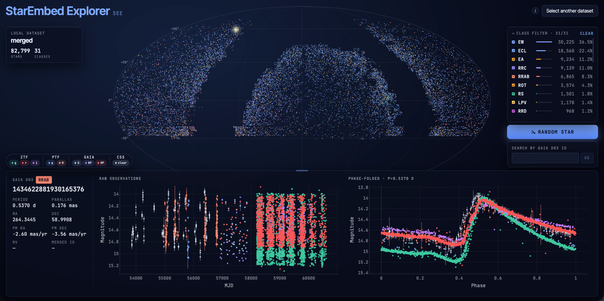
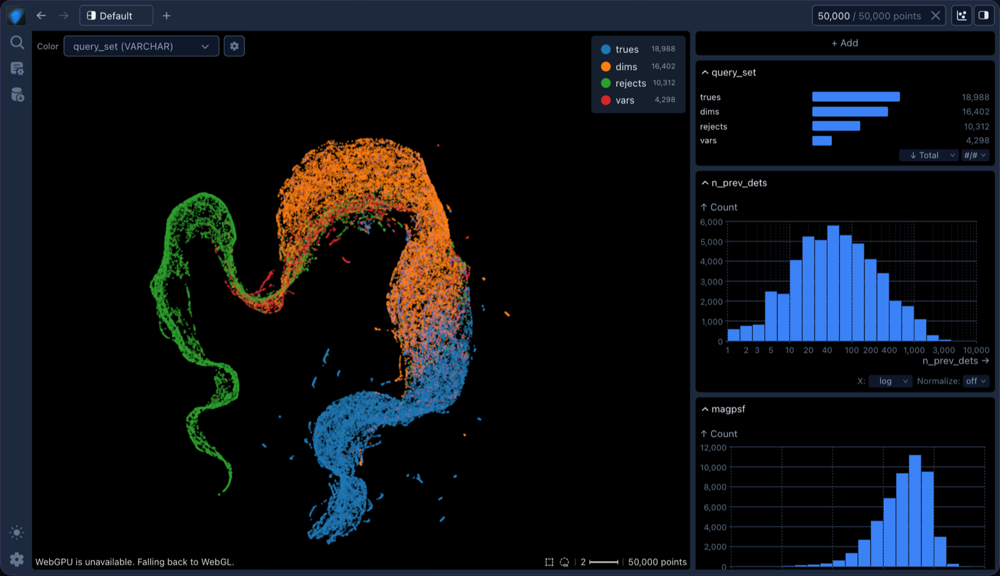

I'm passionate about creating exciting and effective visualizations to disseminate my work. Here are a few examples of such efforts:
I created this animation for a visualization competition at a Northwestern Computational Science Symposium where it was awarded first prize. It captures for a general audience how supernova discovery and classification workflows function and highlights how my BTSbot model enabled the world's first fully automated discovery and classification of a supernova.
I've created this interactive variable star data visualization tool to help my interdisciplinary collaborators build intuition for our astronomical time series data.

An interactive Embedding Atlas showing a 2-D view of BTSbot's learned representation of ZTF alert data. Pan, zoom, filter, and inspect individual sources to build intuition for what the model is doing.
